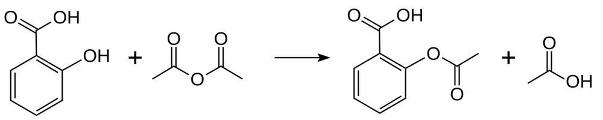

아세틸살리실산(아스피린) (Acetylsalicylic Acid (Aspirin))

쉽게 풀면
아세틸살리실산은 흰색 결정 또는 가루 형태의 고체로, 살리실산에 있는 하이드록시기가 아세틸기로 치환된 구조를 가지고 있다. 물에는 잘 녹지 않지만 유기용매나 뜨거운 물에는 비교적 잘 녹는다. 습기와 열에 노출되면 서서히 가수분해되어 살리실산과 아세트산으로 다시 분해되는 경향이 있어 보관 조건이 중요하다. 오랜 기간 해열진통제로 사용되어 온 익숙한 화합물이기도 한다.
왜 중요한가
아세틸살리실산은 살리실산과 아세트산 무수물을 반응시켜 합성하는 에스터화 반응의 대표적인 실습 예시로, 유기화학 교육과 합성 방법론 연구에서 널리 다뤄진다. 또한 합성한 물질의 순도를 재결정이나 융점 측정으로 확인하는 정제 실습에도 자주 활용된다. 고전적인 유기합성 실험을 통해 수율 계산, 재결정 정제, 융점 측정이라는 화학 실험의 기본기를 한 번에 익힐 수 있는 종합적인 실습 소재로도 폭넓게 다뤄진다.
핵심 정리
- 아세틸살리실산은 C9H8O4, 몰질량 180.159 g/mol이며 약 135~136 °C에서 녹고 140 °C 부근에서 분해된다. 물에 대한 용해도는 약 3 g/L, pKa는 25 °C에서 3.5이다.
- 살리실산을 아세트산 무수물로 처리해 만든다. 살리실산의 하이드록시기가 에스터기로 바뀌며 부산물로 아세트산이 생긴다. 황산(경우에 따라 인산) 소량을 촉매로 거의 항상 쓴다.
- 아세트산을 쓰면 반응이 가역적이어서 물이 생성물을 가수분해할 수 있으므로 무수 시약이 선호된다.
- 건조한 공기에서는 안정하지만 수분에서 서서히 살리실산과 아세트산으로 가수분해된다. 고농도 제제에서 식초 냄새가 나는 이유이다.
예시로 보기
학부 유기화학 실습에서는 살리실산에 아세트산 무수물과 소량의 산 촉매를 넣고 가열해 아스피린을 얻는다. 수율은 이론적 몰수와 얻은 질량으로 계산하고, 순도는 녹는점이 문헌값인 135~136 °C에 가까운지로 확인하는 것이 보통이다.
살리실산은 철(III)에 대한 친화력이 있는 킬레이트 화합물이다. 아스피린을 산이나 염기로 가수분해해도 살리실산이 얻어지는데, 보관 중 분해가 일어나는 것도 같은 반응이다.
자주 하는 오해
- “아스피린은 물에 잘 녹아 안정하다.” 물에 대한 용해도는 약 3 g/L로 낮고, 알칼리 금속의 아세트산염·탄산염·구연산염·수산화물 용액에서는 빠르게 분해된다.
- “아세트산만 있어도 같은 수율이 나온다.” 아세트산은 가역 반응이라 수분이 있으면 생성물이 도로 분해되므로 아세트산 무수물을 쓴다.
- “오래 두어도 성분은 그대로이다.” 습기에 노출되면 살리실산과 아세트산으로 서서히 가수분해되어 보관 조건이 중요하다.
논문에서는 이렇게 쓰입니다
실제 논문에서
국내 학술지 논문에서 이 용어가 쓰인 문장을 그대로 옮겼다. 제목·학술지·연도와 원문 링크를 함께 적었다.
“일반적으로 아스피린 합성 실험은 건조시킨 생성물의 질량을 측정하여 수득률을 계산하는데, 이는 생성물이 아닌 반응물 또는 불순물의 존재를 확인할 수 없어 오차 원인 분석을 어렵게 만든다.”
일반화학 아스피린 합성 실험에서 라만 분광학을 이용한 정량 방법 연구, 현장과학교육, 2024 · KCI 한국학술지인용색인 · 원문 보기 ↗
조금 더 깊게 보면
아세틸살리실산 합성은 살리실산의 방향족 하이드록시기가 아세트산 무수물의 아세틸기와 반응하여 에스터 결합을 형성하는 친핵성 아실치환 반응이다. 인산이나 황산 같은 산 촉매를 소량 사용하면 반응 속도가 빨라지며, 반응 후 남은 아세트산 무수물과 부산물인 아세트산은 물로 세척하여 제거할 수 있다. 살리실산 자체는 위 점막을 자극하는 성질이 강한데, 아세틸화로 하이드록시기를 가려주면 이 자극이 줄어들면서도 진통 효과는 유지되어, 작용기 변형이 약물의 부작용을 낮추는 대표적 사례로 약화학에서 다뤄진다.
주의할 점
아세틸살리실산 자체는 유독물이 아니지만, 반응 원료인 아세트산 무수물은 부식성이 강하고 피부와 호흡기를 자극할 수 있어 흄후드 안에서 보호장비를 착용하고 다뤄야 한다. 합성한 아스피린은 미량의 미반응 살리실산이 남아 있을 수 있어, 염화철(Ⅲ) 용액을 떨어뜨려 보라색 정색 반응이 나타나는지로 순도를 간이 확인하는 절차가 함께 쓰인다.
헷갈리기 쉬운 용어
| 용어 | 무엇인가 | 차이 |
|---|---|---|
| 살리실산 | 아스피린의 출발 물질이자 가수분해 생성물 | 하이드록시기가 아세틸화되지 않은 상태이다 |
| 에스터화 | 산과 알코올류에서 에스터가 생기는 반응 | 아스피린 합성이 이 반응의 대표 사례이다 |
| 재결정 | 용해도 차이로 고체를 정제하는 방법 | 합성한 아스피린의 순도를 높이는 단계이다 |
참고 문헌
- Wikipedia contributors. (n.d.). Aspirin. In Wikipedia, The Free Encyclopedia.
- Wikipedia contributors. (n.d.). Salicylic acid. In Wikipedia, The Free Encyclopedia.